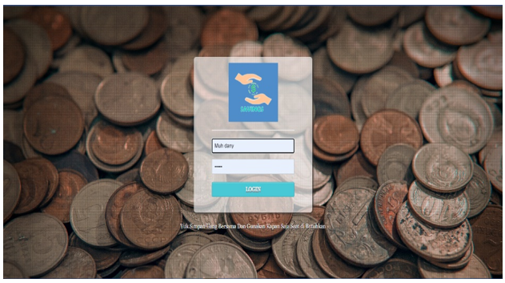
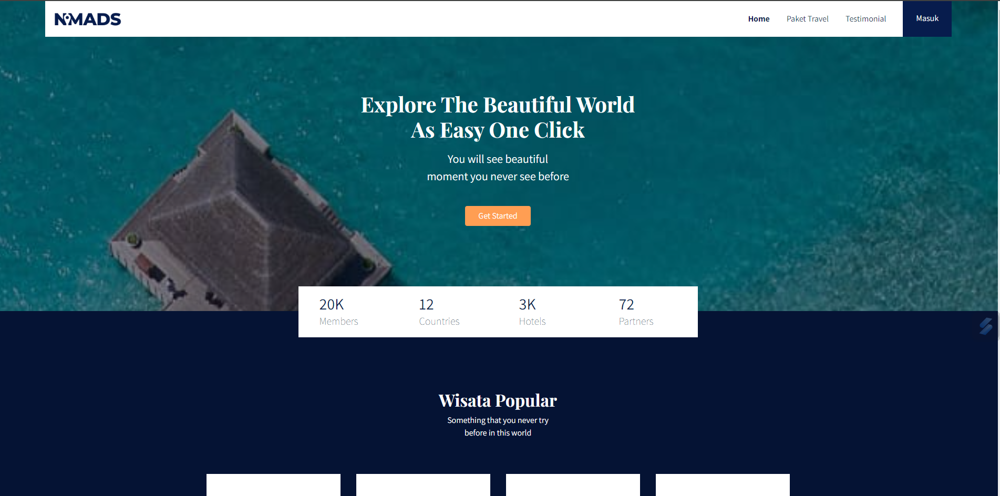
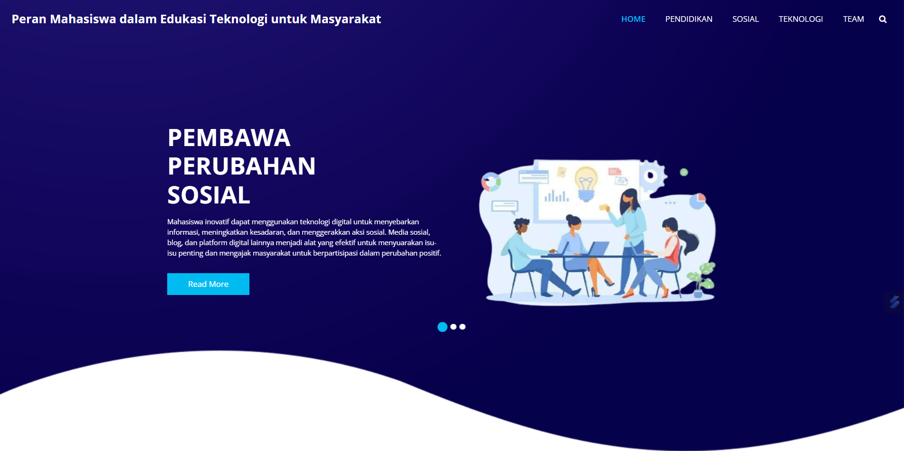
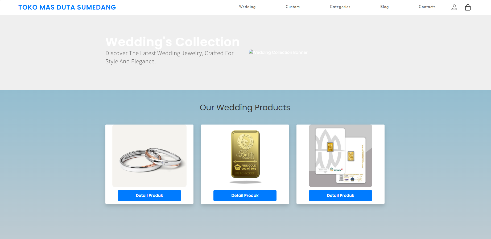

Proyek Portofolio

Simpan Pinjam (2022–2023)
Sistem koperasi digital yang menyediakan fitur simpanan, pinjaman, serta laporan keuangan real-time untuk pengelolaan anggota dan dana koperasi.
🔗 GitHub

Web Wisata Interaktif (2023–2024)
Platform pencarian lokasi wisata, galeri destinasi, ulasan pengunjung, dan sistem booking tiket yang mempermudah wisatawan menjelajahi Indonesia.

Web Pelajaran (2023–2024)
Website edukasi berbasis web yang berisi materi interaktif, soal latihan, dan kuis untuk mendukung pembelajaran daring di berbagai jenjang.
🔗 GitHub

Toko Emas (2024–2025)
Website katalog emas dengan update harga real-time, fitur keranjang dan checkout online, serta integrasi pembayaran sederhana berbasis web.
🔗 GitHub